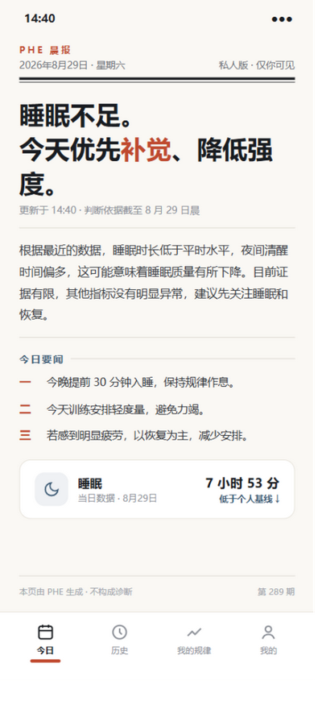
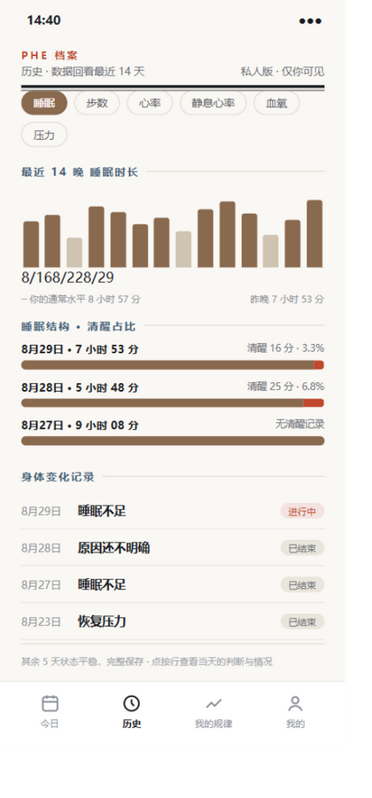
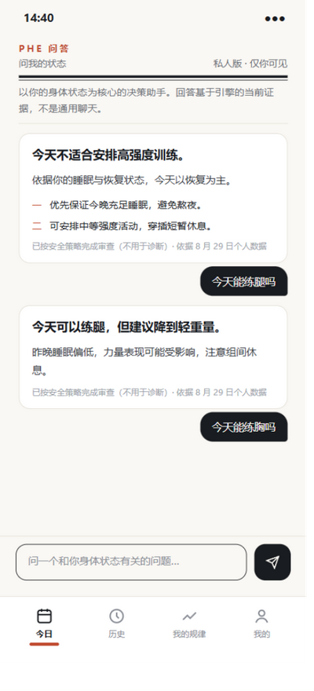
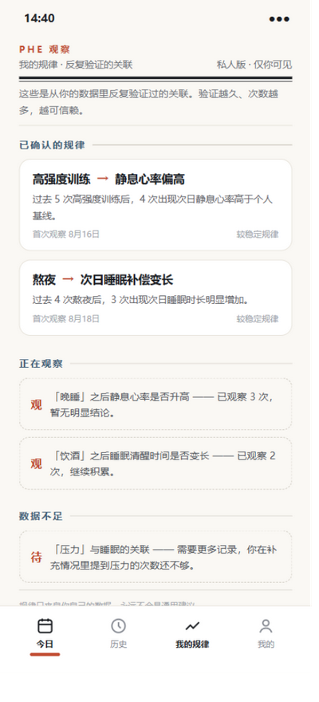
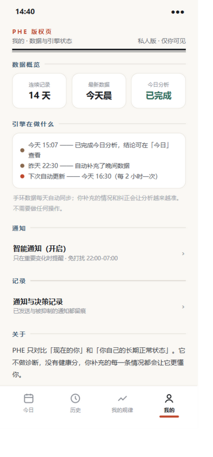

晨间简报 · 全套五页效果图
滚动查看五个页面。看完回到对话框回复「通过」，或说出想改的地方。
1 · 今日（头版结论）

大标题结论 + 导语原因 + 今日要闻三条
2 · 历史（数据回看）

14 晚趋势 + 睡眠结构 + 身体变化记录
3 · 问答（问我的状态）

回答像专栏文章，你的问题在右侧墨块
4 · 我的规律（观察记录）

已确认规律 / 正在观察 / 数据不足 三档
5 · 我的（版权页）

通知订阅 + 关于 + 技术信息小字